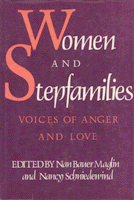

Describes the unique and varied experiences of women in stepfamilies as told by the women themselves
Describes the unique and varied experiences of women in stepfamilies as told by the women themselves


 Describes the unique and varied experiences of women in stepfamilies as told by the women themselves
Describes the unique and varied experiences of women in stepfamilies as told by the women themselves

|  |
Women and StepfamiliesVoices of Anger and Loveedited by Nan Bauer Maglin and Nancy Schniedewindpaper EAN: 978-0-87722-782-3 (ISBN: 0-87722-782-9) |
"This text richly captures people making use of and growing with the intricacies of bi-nuclear families."
—Journal of Marital and Family Therapy
This is the first book to describe the unique and varied experiences and perspectives of women in stepfamilies as told by the women themselves. Through letters, journal entries, poetry, fiction, personal narratives, interviews, and analytic essays, this anthology brings a feminist perspective to the experience of millions of women now involved in stepfamilies.
"Women and Stepfamilies confronts these myths head-on. Through political theory, fiction and poetry, a wide range of contributors look at living arrangements that are considered atypical. Particularly moving is the fact that the book includes a variety of perspectives: that of stepmother, stepgrandmother, stepsister and stepdaughter . [The book] helps, both in a personal sense and in terms of analyzing family norms. As the first book to focus on the unique, varied perspectives of women, told in their own words, it goes a long way toward addressing the myriad issues raised when people come together out of love and try to forge cohesive living units out of disparate, non-biologically related parts. Equally important, the editors deserve kudos for the inclusivity of the volume. It is multinational, multiclass and reflects the perspectives of both lesbian and heterosexual stepmothers and stepdaughters.... I read it with glee, putting it down only to answer a call, or break up a fight between siblings not of my loins."
—Eleanor J. Bader, New Directions for Women
Introduction
Part I: Perspectives
Stepmothers:
1. Letters from a Custodial Stepmother – Christine Bryson
2. Ten Times Harder: Becoming a Stepmother – Suzanne L. Bunkers
3. My Extended Family – Andrea Starr Alonzo
4. Stepmother – Carol Ascher
5. Benjamin – Deborah Rosenfelt
6. Parenting on the Edge – Sophia Carestia
7. The Barbie Doll Fight – Gale McGovern
8. Second Wife: Eleven Poems – Helane Levine-Keating
9. One Step Away from Mother: A Stepmother’s Story – Alice Neufeld
10. The Envious Heart – Helane Levine-Keating
Mothers:
11. Only My Favorite Mommy – Sheila Alson
12 . A Rainbow Family in the Deep South – Yandra Soliz
13. The Step-Wedding – Wilma Wolfenstein
14. Daisy Chain – Morgan David
Stepdaughters:
15. Lizzie’s Axe – Helane Levine-Keating
16. Mementos – Kathy Chamberlain
17. Stealing Clothes from My Stepmother – Alison Townsend
18. The Woman and Her Past – Ines Rodriguez
19. "Whose Side Are You on Anyway?" A Stepdaughter Ponders the Unanswerable – reminiscences by O.C., edited by Yvonne Stam
20. The Mother Who Is Not the Mother But Is – Alison Townsend
21. Name and Shelter Made Me Homeless: Notes from an Interview with a Latina Stepdaughter – Elisa Davila
22. When East Meets West: Second Mothers and Abandoned Daughters – Shirley Geok-Lin Lim
23. What Really is a "Normal" Family? – Erin Marie Hettinga
Stepgrandmothers:
24. I’m My Own Stepgrandma – Juanita R. Howard
25. From Dutiful Daughter to Stepgrandmother – Judith Hocking Hioos
Part II: Stepping Out
26. Choosing Consciousness – Elizabeth Kamarck Minnich
27. Cross-Sex Stepparenting: A Personal Essay – Kathleen Dunn
28. The New Family and the Old Ideology – Judith Grant
29. The Strengths of African-American Stepfamilies – Margaret Wade-Lewis
30. Grown-up Steps: Reflections on Two Generations of Stepmothers and Their Adult Stepdaughters – Hedva Lewittes
31. Working-Class Mothering and the Problem of Weaning – Dympna C. Callaghan
32. Reading Stepfamily Fiction – Nan Bauer Maglin
Part III . Transforming—Both Within and Without
33. Lesbian Stepfamilies and the Myth of Biological Motherhood – Connie Miller
34. Less Than a Mother—More than a Friend – Barbara Drucker
35. Step-by-Step Parenting – Dee, Wendy, and Viivi-Ann Shirley
36. My Wife-in-Law and Me: Reflections on a Joint-Custody Stepparenting Relationship – Sarah Turner
37. There for Each Other: A Stepmothers’ Support Group – Nancy Schniedewind
38. The Company of Children – Catharine R. Stimpson
Nan Bauer Maglin is Associate Professor of English at the Borough of Manhattan Community College, City University of New York.
Nancy Schniedewind is Professor of Educational Studies at the State University of New York, New Paltz.
Women's Studies
General Interest
Family Policy
Women in the Political Economy, edited by Ronnie J. Steinberg.
No longer active.
Women in the Political Economy, edited by Ronnie J. Steinberg, includes books on women and issues of work, family, social movements, politics, feminism, and empowerment. It emphasizes women's roles in society and the social construction of gender and also explores current policy issues like comparable worth, international development, job training, and parental leave.
© 2015 Temple University. All Rights Reserved. This page: http://www.temple.edu/tempress/titles/534_reg.html.